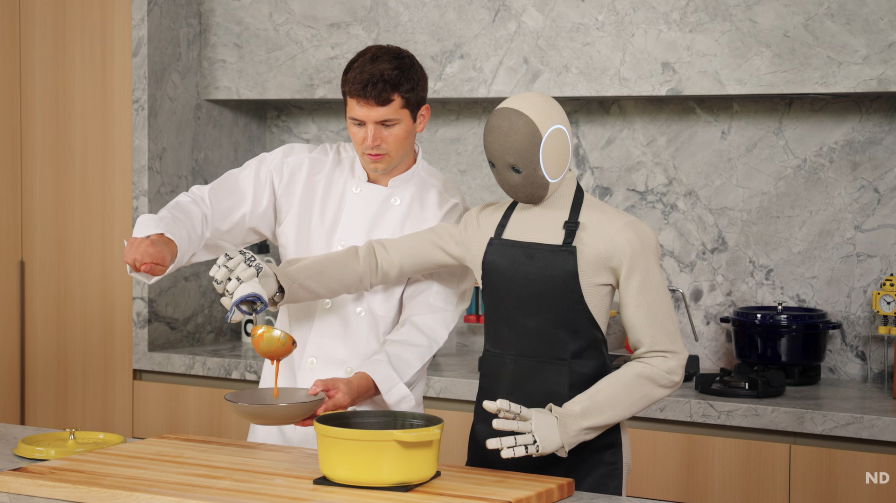

Featured • Humanoid Robots
Can a Robot Cook Gourmet Food?
A humanoid robot joins a professional chef in the kitchen, preparing dishes with precise movements and timing. The video shows how robots can learn complex tasks and safely share space with humans.